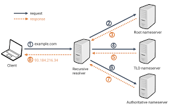

HTTP
HTTP é a sigla para Hypertext Transfer Protocol, ou Protocolo de Transferência de Hipertexto. Esse é o principal protocolo responsável pela transferência de dados na Internet, criando as bases necessárias para a conexão entre um cliente e um servidor.

HTTPS
O Protocolo de transferência de hipertexto seguro (HTTPS) é a versão segura do HTTP, que é o principal protocolo usado para enviar dados entre um navegador web e um site. O HTTPS é criptografado para aumentar a segurança da transferência de dados. Isso é particularmente importante quando usuários transmitem dados sensíveis, como quando fazem login em uma conta de banco, serviço de e-mail ou provedor de seguro saúde.
DNS
O Protocolo de transferência de hipertexto seguro (HTTPS) é a versão segura do HTTP, que é o principal protocolo usado para enviar dados entre um navegador web e um site. O HTTPS é criptografado para aumentar a segurança da transferência de dados. Isso é particularmente importante quando usuários transmitem dados sensíveis, como quando fazem login em uma conta de banco, serviço de e-mail ou provedor de seguro saúde.
FTP
O FTP (File Transfer Protocol) permite que desenvolvedores de sites promovam mudanças de maneira conveniente e segura, mesmo que você tenha que transferir um grande número de arquivos. Em português, ele se traduz como Protocolo de Transferência de Arquivos. A sigla FTP significa File Transfer Protocol ou Protocolo de Transferência de Arquivos. Esse protocolo é uma forma de comunicação entre computadores que usam o TCP/IP, que é o protocolo padrão de comunicação da web. O protocolo FTP permite que usuários autorizados possam fazer download e upload de arquivos de um servidor FTP, um computador que armazena os dados. Dessa forma, o FTP facilita a transferência de informações entre diferentes dispositivos.
DHCP
O protocolo DHCP é um protocolo de cliente/servidor que fornece automaticamente um host IP (Protocolo de Internet) com seu endereço IP e outras informações de configuração relacionadas, como a máscara de sub-rede e o gateway padrão. OS RFCs 2131 e 2132 definem o DHCP como um padrão IETF (Internet Engineering Task Force) com base no BOOTP (Bootstrap Protocol), um protocolo com o qual o DHCP compartilha muitos detalhes de implementação. O DHCP permite que os hosts obtenham as informações de configuração TCP/IP necessárias de um servidor DHCP.
SSH
-O protocolo Secure Shell (SSH) é um método para enviar comandos com segurança a um computador em uma rede não segura. O SSH usa criptografia para autenticar e criptografar conexões entre dispositivos. O SSH também permite o tunelamento, ou encaminhamento de porta, que é quando os pacotes conseguem atravessar redes que, de outra forma, não seriam capazes de atravessar. O SSH é frequentemente usado para controlar servidores remotamente, para gerenciar a infraestrutura e para transferir arquivos.